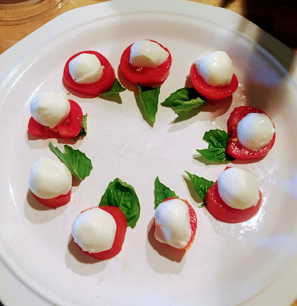

Fresh-From-the-Garden Caprese

Description
I picked a pretty easy recipe to add here. The image is from when I had fresh tomatoes and basil straight from my garden and so then I bought mozarella cheese.
Ingredients
- Tomatoes
- Olive oil
- Fresh basil
- Fresh mozarella
- Salt
- Pepper
Steps
- Slize the tomatoes
- Lay the tomato slices on a plate
- Lay basil and mozarella over the tomatoes
- Drizzle everything with olive oil
- Add salt and pepper to taste